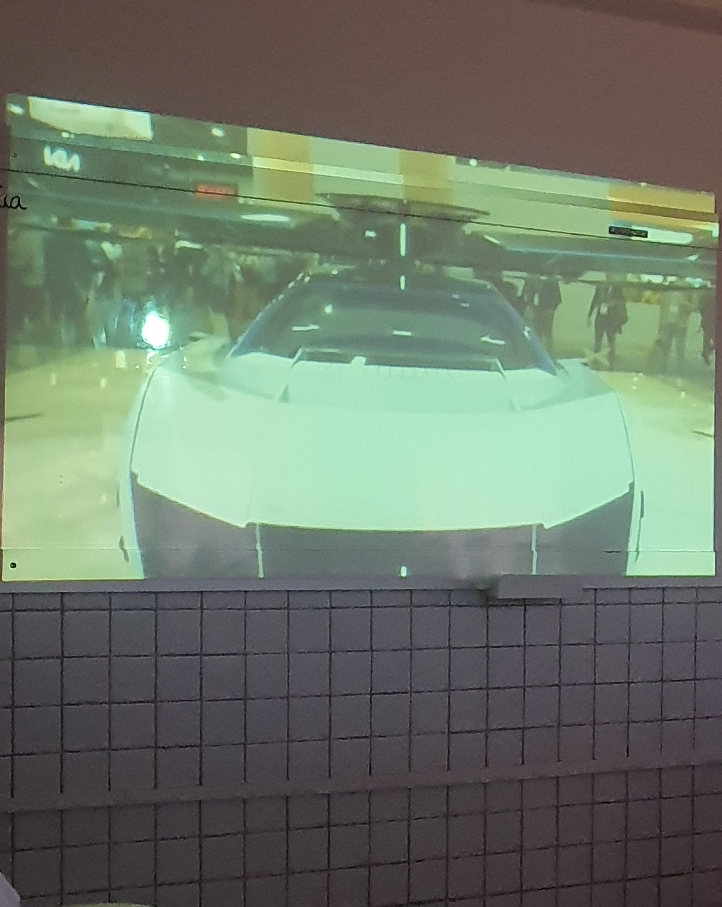

28/02/2024 - 08:52
 Cachorro ao lado do refeitórioExplicação: "eu estava saindo do refeitório e vi esse cachorro, aí eu tirei foto." - Mateus Luis
Esse site foi feito por Mateus Luis (Info 2M) e Ryan Gabriel (Info 2M), onde Mateus programou tudo e Ryan falou "joia". Se você é Erivaldo de Souza, clique aqui